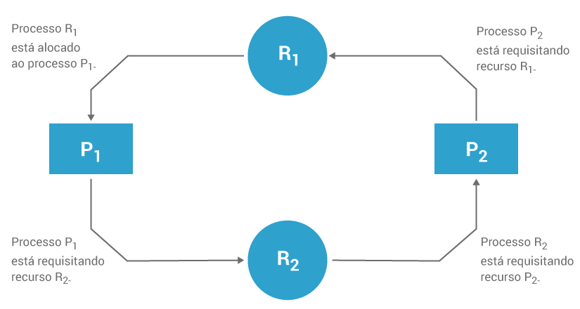

Por mais inteligentes que pareçam, os computadores são máquinas programadas para receberem conjuntos de informações específicas (comandos), qualquer informação recebida que não faça parte do conjunto dessas infomações, o computador a rejeita e informa: ”Informação (ou comando) desconhecida(o)”, ou seja, resumindo, por si só o computador não toma providência alguma, ele sempre precisará ter aquela situação previamente prevista para poder atuar.
O termo Deadlock foi dado como nome a uma ocorrência de travamento em um processo ou thread onde, sem que haja uma intervenção, ela não será resolvida. O Deadlock ocorre quando um processo ou thread aguarda um evento que não ocorrerá, ou seja, a espera será eterna: o sistema trava.
A figura abaixo ilustra uma situação de travamento, onde, sem alguma intervenção, o trânsito não voltará a andar. É uma boa comparação de situação com o Deadlock:
Exemplo de DeadLock
Essa dependência mútua gerará um travamento e assim permanecerá até que alguma providência seja tomada. Essas providências variam com a prioridade de execução de cada processo e também com o tipo de informação (evento) que está sendo aguardado por ambos. A figura abaixo ilustra essa situação:

DeadLock entre dois processos
Na figura acima, o sistema entrou em Deadlock porque cada processo (P1 e P2) retém um recurso que está sendo requisitado pelo outro processo e nenhum processo está preparado para liberar seu recurso sem antes obter o recurso que precisa.
1. Condições para o DeadLock
Há quatro condições em que ocorrem os Deadlocks:
Condição de exclusão mútua: Um recurso pode ser adquirido (utilizado) apenas por um processo por vez;
Condição de espera (condição de posse e espera): Um processo que obteve um recurso exclusivo pode reter esse recurso enquanto espera para obter outros recursos;
Condição de não-preempção: Uma vez que o processo obtenha um recurso, o sistema não pode retirá-lo do controle do processo até que esse tenha terminado de utilizar o recurso;
Condição de espera circular: Dois ou mais processos ficam travados em uma ‘cadeia circular’ na qual um processo está aguardando um ou mais recursos que o processo seguinte da cadeia detém.
Importante:
Não preemptivo:
Processo nunca é interrompido: execução só para quando o processo termina ou é bloqueado;
É mais simples que o preemptivo.
Preemptivo:
Processo pode ser interrompido antes de terminar ou sem ser bloqueado;
Possui um melhor tempo de resposta.
2. Soluções para o DeadLock
Há quatro soluções possíveis para os Deadlocks:
Prevenção de deadlock;
Evitação de deadlock;
Detecção de deadlock;
Recuperação de deadlock.
Vejamos cada uma delas.
2.1 Prevenção de DeadLock
Condiciona um sistema a afastar qualquer possibilidade de ocorrência de deadlocks;
Não é possível ocorrer deadlock se uma das quatro condições (descritas acima) necessárias for negada;
A primeira condição (exclusão mútua) não pode ser quebrada.
2.2. Evitação de Deadlock:
Há três maneiras de se evitar o deadlock:
evitando-se a condição de 'espera';
negando a condição de 'não-preempção'; e
negando a condição de 'espera circular'.
2.2.1. Evitação da Condição de Espera
Todos os recursos que um processo precisa para concluir suas tarefas devem ser solicitados de uma vez;
Problema: prejudica a alocação de recursos, tornando-a ineficaz.
2.2.2. Negação da Condição de 'Não-Preempção'
Os processos podem perder trabalho quando os recursos sofrem preempção;
Isso pode sobrecarregar substancialmente o sistema, visto que os processos precisam ser reiniciados.
2.2.3. Negação da Condição de 'Espera Circular'
Usa uma ordenação linear de recursos para evitar deadlock;
Utilização de recursos mais eficaz que a de outras estratégias.
Exige que o programador determine a ordenação ou os recursos para cada sistema.
2.3. Detecção de DeadLock
Usada em sistemas nos quais é possível ocorrer deadlocks;
Determina se ocorreu deadlock;
Identifica os processos e recursos envolvidos no deadlock;
Os algoritmos de detecção de deadlock podem exigir um tempo de execução significativo.
2.4. Recuperação de DeadLock
Remove os deadlocks do sistema de modo que os processos em deadlock possam ser executados até o fim e liberar seus recursos;
Mecanismo de suspensão/retomada: Permite que o sistema fique temporariamente retido e os processos suspensos podem ser retomados sem que haja perda de trabalho;
Verificação/reversão de estado: Simplifica a capacidade de suspensão/retomada e restringe a perda de trabalho ao instante em que se realizou a última verificação.
O deadlock é considerado uma complicação insignificante no sistema dos computadores pessoais.